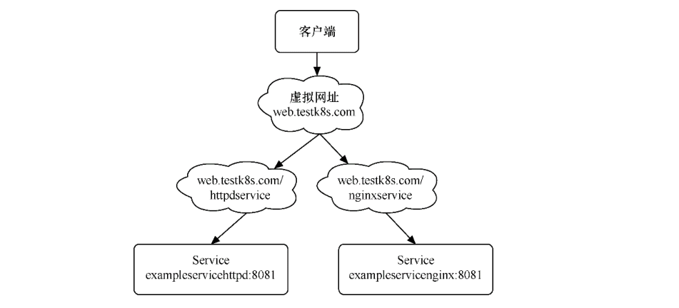

Contents
Ingress¶
要将Kubernetes集群内的服务发布到集群外来使用，通常的办法是
配置NodePort
配置LoadBalancer的Service
配置ExternalIP的Service
通过Pod模板中的HostPort进行配置等。
但这些方式都存在比较严重的问题。它们几乎都是通过节点端口形式向外暴露服务的，Service一旦变多，每个节点上开启的端口也会 变多。这样不仅维护起来相当复杂，安全性还会大大降低。
Ingress可以避免这个问题，除了Ingress自身的服务需要向外发布之外，其他服务不必使用节点端口形式向外发布。
由Ingress接收外部请求，然后按照域名配置转发给各个后端服务
通过Ingress访问Service提供的服务
在使用Ingress时一般会涉及3个组件：
反向代理负载均衡器：其实它类似于Nginx、Apache的应用。在集群中可以使用Deployment、DaemonSet等控制器自由部署反向代理负载均衡器。
Ingress控制器：实质上是监控器。它不断地与API Server进行交互，实时地感知后端Service、Pod等的变化情况，比如新增和减 少Pod、增加与减少Service等。当得到这些变化信息后，Ingress控制器再结合Ingress生成配置，然后更新反向代理负载均衡器并 刷新其配置，以达到服务发现的作用。
Ingress：定义访问规则。假如某个域名对应某个Service，或者某个域名下的子路径对应某个Service，那么当某个域名的请求或 子路径的请求进来时，就把请求转发给对应Service。根据这个规则，Ingress控制器会将访问规则动态写入负载均衡器配置中，从 而实现整体的服务发现和负载均衡。
在使用Ingress时各个组件的关系

Ingress控制器不会随着Kubernetes一起安装。如果要让Ingress资源正常运作，需要安装Ingress控制器。可以选择的Ingress控制器 种类很多，可根据情况自行选择。
不管是哪类Ingress控制器，因为在基本使用层面几乎没有差别（在性能、安全或复杂使用上可能略有区别），所以后面介绍Ingress 基本操作的部分也适用于所有类型的Ingress控制器。
我们使用Traefik作为Ingress控制器，它的功能非常强大，跟Kubernetes结合得很好，还提供了商用支持。
1.Ingress控制器的安装¶
Traefik的安装并不复杂。在这里我们选择最简单的默认安装，只要两步就可以完成。
第一步，执行以下命令，配置traefik-ingress-controller基于角色的访问控制（Role Based Access Control, RBAC），让它能与 Kubernetes的资源和API进行细粒度的控制和交互。
$ kubectl apply -f https://raw.githubusercontent.com/containous/traefik/v1.7/examples/k8s/traefik-rbac.yaml
第二步，选择以下两个命令中的一个执行即可。配置traefik-ingress-controller的反向代理负载均衡器服务进程，并在
Kubernetes集群外的各个Node上暴露端口，这样就可以通过集群外的机器访问服务了。
DaemonSet版本的代码如下。
$ kubectl apply -f https://raw.githubusercontent.com/containous/traefik/v1.7/examples/k8s/traefik-ds.yaml
Deployment版本的代码如下。
$ kubectl apply -f https://raw.githubusercontent.com/containous/traefik/v1.7/examples/k8s/traefik-deployment.yaml
DaemonSet版本和Deployment版本各有利弊。
Deployment版本的可伸缩性更好，而DaemonSet的流量转发更少，这里不会详述，可根据自己的喜好选择。
从使用角度来说，两种方式没有任何差异，都会暴露各个Node的80端口以供集群外的机器访问服务。
其区别在于：
DaemonSet版本用Pod的HostPort进行暴露
Deployment版本用Service的NodePort进行暴露
可以打开上面两个yaml文件自行查看。我们本次选择的是DaemonSet版本。
提示：为了了解更全面的安装细节或进行自定义操作，可以参见Traefik官网中关于在Kubernetes上使用的部分，查看TraefikIngress控制器的详细安装说明。
两个安装步骤执行完成后，可以通过如下命令，查看与traefik-ingress-controller相关的Pod是否已成功运行
$ kubectl get pod -n kube-system -o wide
NAME READY STATUS RESTARTS AGE IP NODE NOMINATED NODE READINESS GATES
traefik-ingress-controller-8zsqv 1/1 Running 0 93s 10.0.3.188 giteego-k8s-n2 <none> <none>
traefik-ingress-controller-j4gsp 1/1 Running 0 93s 10.0.1.9 giteego-k8s-n3 <none> <none>
traefik-ingress-controller-mxnw8 1/1 Running 0 93s 10.0.0.218 giteego-k8s-n1 <none> <none>
处于运行状态后，可以对这些Pod的IP地址执行curl命令，查看服务是否成功安装
[root@giteego-k8s-n4 ~]# curl 10.0.3.188
404 page not found
[root@giteego-k8s-n4 ~]# curl 10.0.1.9
404 page not found
[root@giteego-k8s-n4 ~]# curl 10.0.0.218
404 page not found
如果返回“404 page notfound”，则表示服务已成功安装（因为没有配置资源，所以显示“404 page not found”）
通过如下命令，也可以看到与traefik-ingress-controller相关的Service成功配置
$ kubectl get service -n kube-system
NAME TYPE CLUSTER-IP EXTERNAL-IP PORT(S) AGE
kube-dns ClusterIP 10.96.0.10 <none> 53/UDP,53/TCP,9153/TCP 170d
metrics-server ClusterIP 10.103.31.254 <none> 443/TCP 169d
traefik-ingress-service ClusterIP 10.101.78.83 <none> 80/TCP,8080/TCP 4m33s
之前提到，Traefik在每个Node上暴露80端口以提供服务。我们也可以进行测试
$ kubectl get node -o wide
NAME STATUS ROLES AGE VERSION INTERNAL-IP EXTERNAL-IP OS-IMAGE KERNEL-VERSION CONTAINER-RUNTIME
giteego-k8s-m1 Ready control-plane,master 170d v1.21.3 192.168.1.56 <none> CentOS Linux 7 (Core) 5.14.15-1.el7.elrepo.x86_64 containerd://1.4.11
giteego-k8s-n1 Ready ingress 170d v1.21.3 192.168.1.58 <none> CentOS Linux 7 (Core) 5.14.15-1.el7.elrepo.x86_64 containerd://1.4.11
giteego-k8s-n2 Ready ingress 170d v1.21.3 192.168.1.64 <none> CentOS Linux 7 (Core) 5.14.15-1.el7.elrepo.x86_64 containerd://1.4.11
giteego-k8s-n3 Ready ingress 170d v1.21.3 192.168.1.59 <none> CentOS Linux 7 (Core) 5.14.15-1.el7.elrepo.x86_64 cont
[root@gitee-go traefik]# curl 192.168.1.58
404 page not found
[root@gitee-go traefik]# curl 192.168.1.64
404 page not found
1.1 Nginx-ingress部署及使用¶
1.2 helm部署nginx-ingress¶
pull helm chart ingress-nginx-4.0.19.tgz
helm pull --repo https://kubernetes.github.io/ingress-nginx ingress-nginx
tar -zxf ingress-nginx-4.0.19.tgz
pull & push images
docker pull k8s.gcr.io/ingress-nginx/controller:v1.1.3
docker pull k8s.gcr.io/ingress-nginx/kube-webhook-certgen:v1.1.1
docker pull k8s.gcr.io/defaultbackend-amd64:1.5
docker tag k8s.gcr.io/ingress-nginx/controller:v1.1.3 hub.gitee.com/ingress-nginx/controller:v1.1.3
docker tag k8s.gcr.io/ingress-nginx/kube-webhook-certgen:v1.1.1 hub.gitee.com/ingress-nginx/kube-webhook-certgen:v1.1.1
docker tag k8s.gcr.io/defaultbackend-amd64:1.5 hub.gitee.com/ingress-nginx/defaultbackend-amd64:1.5
docker push hub.gitee.com/ingress-nginx/controller:v1.1.3
docker push hub.gitee.com/ingress-nginx/kube-webhook-certgen:v1.1.1
docker push hub.gitee.com/ingress-nginx/defaultbackend-amd64:1.5
create values.yaml
cat > values.yaml <<EOF
controller:
image:
registry: hub.gitee.com
image: ingress-nginx/controller
tag: "v1.1.3"
digest: sha256:dffe4f5b082eadb5d4c9680c80319bf45447609b26330faafa6e4fef5c6a1e59
config:
client-header-buffer-size: 16k
use-forwarded-headers: "true"
dnsPolicy: ClusterFirstWithHostNet
hostNetwork: true
hostPort:
enabled: true
extraArgs:
http-port: 80
https-port: 443
default-ssl-certificate: "ingress-nginx/gitee.com-ingress-secret"
kind: DaemonSet
tolerations:
- key: GiteeCommonAddonsOnly
operator: "Equal"
value: "yes"
effect: "NoSchedule"
nodeSelector:
node_role: sys-node
kubernetes.io/os: linux
service:
enabled: false
type: ClusterIP
admissionWebhooks:
patch:
image:
registry: hub.gitee.com
image: ingress-nginx/kube-webhook-certgen
tag: v1.1.1
digest: sha256:78351fc9d9b5f835e0809921c029208faeb7fbb6dc2d3b0d1db0a6584195cfed
nodeSelector:
node_role: sys-node
kubernetes.io/os: linux
tolerations:
- key: GiteeCommonAddonsOnly
operator: "Equal"
value: "yes"
effect: "NoSchedule"
defaultBackend:
enabled: true
image:
registry: hub.gitee.com
image: ingress-nginx/defaultbackend-amd64
tag: "1.5"
tolerations:
- key: GiteeCommonAddonsOnly
operator: "Equal"
value: "yes"
effect: "NoSchedule"
nodeSelector:
node_role: sys-node
kubernetes.io/os: linux
EOF
install ingress-nginx
kubectl create ns ingress-nginx
helm install -n ingress-nginx -f values.yaml ingress-nginx ./ingress-nginx
create certs secret
cd certs
kubectl create secret tls -n ingress-nginx gitee.com-ingress-secret --cert=gitee.com.crt --key=gitee.com.key --dry-run=client -o yaml > gitee.com-ssl-secret.yaml
kubectl apply -f gitee.com-ssl-secret.yaml
set default ingressClass
kubectl apply -f ingressClass.yaml
1.3 Traefik-ingress部署及使用¶
Traefik-ingress部署及使用
k8s Traefik简介与部署
1.4 在指定节点部署Ingress服务¶
我们部署2个ingress节点，做ha高可用，对外发布服务。
1. 设置污点和标签¶
设置污点
$ kubectl taint node gitee-k8s-n1 GiteeCommonAddonsOnly=yes:NoSchedule
$ kubectl taint node gitee-k8s-n2 GiteeCommonAddonsOnly=yes:NoSchedule
打标签
## 打上2个标签。
# 带有ingress标识符的标签
$ kubectl label nodes gitee-k8s-n1 node-role.kubernetes.io/ingress="true"
$ kubectl label nodes gitee-k8s-n2 node-role.kubernetes.io/ingress="true"
# nginx-ingress标签
$ kubectl label nodes gitee-k8s-n1 node_role="sys-node"
$ kubectl label nodes gitee-k8s-n2 node_role="sys-node"
查看节点是否设置 Label 成功
$ kubectl get nodes --show-labels
如果想删除标签，可以使用
# 删除nginx-ingress标签
$ kubectl label nodes gitee-k8s-n1 node-role-
# 删除带有ingress标识符的标签
$ kubectl label nodes gitee-k8s-n1 node-role.kubernetes.io/ingress-
更新deployment，增加nodeSelector配置
# $ kubectl -n kube-system patch deployment nginx-ingress-controller -p '{"spec": {"template": {"spec": {"nodeSelector": {"node-role.kubernetes.io/ingress": "true"}}}}}'
$ kubectl -n kube-system patch deployment nginx-ingress-controller -p '{"spec": {"template": {"spec": {"nodeSelector": {"node_role": "sys-node"}}}}}'
2. 安装keepalived¶
通过keepalived来配置ingress的高可用。
Keepalived安装
Keepalived 在 CentOS7系统下使用 yum 安装即可。在 CentOS 7 系统下，LVS 已被集成到内核中，无须单独安装。
$ yum -y install keepalived
$ systemctl restart keepalived
$ systemctl status keepalived
$ systemctl enable keepalived
Keepalived配置
# 备份默认配置
$ cp -rf /etc/keepalived/keepalived.conf{,_bak}
主机
cat >/etc/keepalived/keepalived.conf <<EOF
! Configuration File for keepalived
global_defs {
notification_email {
acassen@firewall.loc
failover@firewall.loc
sysadmin@firewall.loc
}
notification_email_from Alexandre.Cassen@firewall.loc
smtp_server 192.168.200.1
smtp_connect_timeout 30
router_id LVS_DEVEL
vrrp_skip_check_adv_addr
#vrrp_strict
vrrp_garp_interval 0
vrrp_gna_interval 0
}
vrrp_instance VI_1 {
state BACKUP
nopreempt
interface eth0
virtual_router_id 52
priority 100
advert_int 1
authentication {
auth_type PASS
auth_pass 1111
}
virtual_ipaddress {
192.168.1.107
}
}
EOF
备机
cat >/etc/keepalived/keepalived.conf <<EOF
! Configuration File for keepalived
global_defs {
notification_email {
acassen@firewall.loc
failover@firewall.loc
sysadmin@firewall.loc
}
notification_email_from Alexandre.Cassen@firewall.loc
smtp_server 192.168.200.1
smtp_connect_timeout 30
router_id LVS_DEVEL
vrrp_skip_check_adv_addr
#vrrp_strict
vrrp_garp_interval 0
vrrp_gna_interval 0
}
vrrp_instance VI_1 {
state BACKUP
interface eth0
virtual_router_id 52
priority 90
advert_int 1
authentication {
auth_type PASS
auth_pass 1111
}
virtual_ipaddress {
192.168.1.107
}
}
EOF
$ systemctl restart keepalived
$ systemctl status keepalived
3. 安装haproxy¶
通过haproxy进行负载均衡后端服务。
$ yum -y install haproxy
$ cp -rf /etc/haproxy/haproxy.cfg{,_bak}
主备机haproxy的配置
cat > /etc/haproxy/haproxy.cfg <<EOF
global
log 127.0.0.1 local2
chroot /var/lib/haproxy
pidfile /var/run/haproxy.pid
maxconn 8000
user haproxy
group haproxy
daemon
stats socket /var/lib/haproxy/stats
defaults
mode tcp
log global
option httplog
option dontlognull
retries 3
timeout http-request 10s
timeout queue 1m
timeout connect 10s
timeout client 1m
timeout server 1m
timeout http-keep-alive 10s
timeout check 10s
maxconn 600
frontend pro_nodeport30900
bind *:9000
mode tcp
default_backend pro_nodeport30900
frontend jen_nodeport32001
bind *:9600
mode tcp
default_backend jen_nodeport32001
frontend mysql5730006
bind *:3308
mode tcp
default_backend mysql5730006
frontend redis30379
bind *:6379
mode tcp
default_backend redis30379
frontend gitalyha30099
bind *:9999
mode tcp
default_backend gitalyha30099
backend pro_nodeport30900
balance roundrobin
server master1 192.168.1.32:30900 check maxconn 2000
server master2 192.168.1.39:30900 check maxconn 2000
backend jen_nodeport32001
balance roundrobin
server master1 192.168.1.32:32001 check maxconn 2000
server master2 192.168.1.39:32001 check maxconn 2000
backend mysql5730006
balance leastconn
server master1 192.168.1.32:30006 check maxconn 2000
server master2 192.168.1.39:30006 check maxconn 2000
backend redis30379
balance roundrobin
server master1 192.168.1.32:30379 check maxconn 2000
server master2 192.168.1.39:30379 check maxconn 2000
backend gitalyha30099
balance roundrobin
server master1 192.168.1.32:30099 check maxconn 2000
server master2 192.168.1.39:30099 check maxconn 2000
EOF
$ systemctl restart haproxy
$ systemctl enable haproxy
最后再使用helm部署nginx-ingress，参考上面的部署方法。
2.Ingress的基本操作¶
2.1 Ingress示例¶
两个服务—一个是httpd服务，另一个是Nginx服务
（1）创建与这两个服务相关的Deployment控制器。 ① 使用命令创建yml文件。
exampledeploymentforingress.yml
② 在文件中填入如下内容并保存。
apiVersion: apps/v1
kind: Deployment
metadata:
name: exampledeploymentnginx
spec:
replicas: 1
selector:
matchLabels:
example: deploymentfornginx
template:
metadata:
labels:
example: deploymentfornginx
spec:
containers:
- name: nginx
image: nginx:1.7.9
ports:
- containerPort: 80
---
apiVersion: apps/v1
kind: Deployment
metadata:
name: exampledeploymenthttpd
spec:
replicas: 1
selector:
matchLabels:
example: deploymentforhttpd
template:
metadata:
labels:
example: deploymentforhttpd
spec:
containers:
- name: httpd
image: httpd:2.2
ports:
- containerPort: 80
③ 运行以下命令，通过模板创建Deployment控制器。
$ kubectl apply -f exampledeploymentforingress.yml
④ 通过$ kubectl get pod-o wide命令查看Pod是否已成功
$ kubectl get pod -o wide
NAME READY STATUS RESTARTS AGE IP NODE NOMINATED NODE READINESS GATES
exampledeploymenthttpd-75c6d89b44-rs66c 1/1 Running 0 107s 10.0.23.198 gitee-k8s-w28 <none> <none>
exampledeploymentnginx-656c6d8f4c-7mnnf 1/1 Running 0 107s 10.0.23.12 gitee-k8s-w28 <none> <none>
（2）创建与这两个服务相关的Service。
① 使用命令创建yml文件。
exampleserviceforingress.yml
kind: Service
apiVersion: v1
metadata:
name: exampleservicenginx
spec:
selector:
example: deploymentfornginx
ports:
- protocol: TCP
port: 8081
targetPort: 80
---
kind: Service
apiVersion: v1
metadata:
name: exampleservicehttpd
spec:
selector:
example: deploymentforhttpd
ports:
- protocol: TCP
port: 8081
targetPort: 80
③ 运行以下命令，通过模板创建Service。
$ kubectl apply -f exampleserviceforingress.yml
④ 通过$ kubeclt get service命令，查看Service是否已成功配置
$ kubectl get service
NAME TYPE CLUSTER-IP EXTERNAL-IP PORT(S) AGE
exampleservicehttpd ClusterIP 10.105.151.198 <none> 8081/TCP 61s
exampleservicenginx ClusterIP 10.100.179.196 <none> 8081/TCP 61s
exampleservicehttpd的IP地址为10.105.151.198， exampleservicenginx的IP地址为10.100.179.196。
（3）进行简单验证，看看服务是否已成功创建。
$ curl 10.105.151.198:8081
<html><body><h1>It works!</h1></body></html>
$ curl 10.100.179.196:8081
<!DOCTYPE html>
<html>
<head>
<title>Welcome to nginx!</title>
2.2 不使用虚拟主机名称-单个Service¶
Kubernetes中其实可以通过很多方式来暴露单个Service，不过也可以用Ingress来实现这个功能。要指定一个没有配置规则的 Ingress，只设置backend属性即可。
注意：显而易见，不推荐这种方式，这里只是为了说明这种方式存在而已。
首先，定义模板文件，创建一个名为examplesingleingress.yml的模板文件。命令如下。
apiVersion: extensions/v1beta1
kind: Ingress
metadata:
name: examplesingleingress
annotations:
Kubernetes.io/ingress.class: traefik
spec:
backend:
serviceName: exampleservicehttpd
servicePort: 8081
该模板的含义如下。
apiVersion表示使用的API版本，Ingress目前只存在于beta1版本中。
kind表示要创建的资源对象，这里使用关键字Ingress。
metadata表示该资源对象的元数据，一个资源对象可拥有多个元数据。metadata下面的annotations表示资源对象的注解。对 于Ingress，如果配置了多个Ingress控制器，则需要指定此注解，确定使用哪个Ingress控制器。在本书中安装的是Traefik， 所以需要按此填写。如果只安装了一个Ingress控制器，则可以不用指定此注解，Ingress会自动匹配唯一的控制器。
spec表示该资源对象的具体设置。spec下面的backend表示Ingress对应的后端服务。其中serviceName代表Service资源的 名称，这里取之前设置的名称exampleservicehttpd；
servicePort代表Service资源的端口，这里取之前在exampleservicehttpd中设置的8081。
通过模板创建Ingress
$ kubectl apply -f examplesingleingress.yml
Ingress创建成功后，可以通过以下命令查看Ingress。
$ kubectl get ingress
NAME CLASS HOSTS ADDRESS PORTS AGE
examplesingleingress <none> * 80 28s
通过以下命令可以查看指定Ingress的详细信息。
$ kubectl describe ingress examplesingleingress
Name: examplesingleingress
Namespace: default
Address:
Default backend: exampleservicehttpd:8081 (10.0.6.41:80)
Rules:
Host Path Backends
---- ---- --------
* * exampleservicehttpd:8081 (10.0.6.41:80)
Annotations: Kubernetes.io/ingress.class: traefik
Events: <none>
可以看到这个Ingress 对应的后端为exampleservicehttpd:8081，后面的括号中是Pod的IP地址，即10.0.6.41:80。
Host和Path都为*，这表示没有指定任何规则，直接访问Ingress服务的根地址即可访问Service。
之前提到Traefik在每个Node上暴露端口80以提供服务，我们可以进行测试。
$ curl 192.168.1.58
<html><body><h1>It works!</h1></body></html>
$ curl 192.168.1.64
<html><body><h1>It works!</h1></body></html>
2.3 基于虚拟主机名称-多个子路径¶
上面的示例并未展示出Ingress的强大之处，这里会展示Ingress的另一个用法，以便看到使用Ingress的优势所在。
假设现在要实现这样的场景：
在同一个域名下配置两个子路径，其中一个子路径访问httpd的Service，
另一个子路径访问Nginx的Service。
如图6-50所示，首先，通过虚拟网址
web.testk8s.com/httpdservice和web.testk8s.com/nginxservice访问不同的服务。
同一个域名下配置两个子路径
创建examplefanoutingress.yml模板文件
apiVersion: networking.k8s.io/v1
kind: Ingress
metadata:
name: examplefanoutingress
annotations:
Kubernetes.io/ingress.class: traefik
traefik.frontend.rule.type: PathPrefixStrip
spec:
rules:
- host: web.testk8s.com
http:
paths:
- path: /httpdservice
backend:
service:
name: exampleservicehttpd
port:
number: 8081
- path: /nginxservice
backend:
service:
name: exampleservicenginx
port:
number: 8081
该模板的含义如下，这里会详细说明一些重要的属性。
apiVersion表示使用的API版本，Ingress目前只存在于beta1版本中。
kind表示要创建的资源对象，这里使用关键字Ingress。
metadata表示该资源对象的元数据，一个资源对象可拥有多个元数据。metadata下面的annotations表示资源对象的注解。其 中Kubernetes.io/ingress.class表示要使用哪个Ingress控制器；traefik.frontend.rule.type表示Traefik的特定属性，如果支持在一个域名下划分子路径，这里必须填写PathPrefixStrip。
spec表示该资源对象的具体设置。spec下面的rules表示Ingress的路由规则。host表示自定义一个虚拟主机名称， 以此为基础访问各个Service；http表示http协议下的各种设置，在下面设置了多个paths属性，即代表各个子路径的设置。第 一个path为/httpdservice，它对应的后端服务是exampleservicehttpd；第二个path为/nginxservice，它对应的后端服务是exampleservicenginx。
运行以下命令，通过模板创建Ingress。
$ kubectl apply -f examplefanoutingress.yml
Ingress创建成功后，可以通过以下命令查看Ingress。
$ kubectl get ingress
NAME CLASS HOSTS ADDRESS PORTS AGE
examplefanoutingress <none> web.testk8s.com 80 113s
examplesingleingress <none> * 80 3s
从这里也可以看到本例中配置的Ingress与上一个示例中配置的Ingress的区别，它拥有HOSTS属性（值为web.testk8s.com）。
通过以下命令，可以查看指定Ingress的详细信息。
$ kubectl describe ingress examplefanoutingress
Name: examplefanoutingress
Namespace: default
Address:
Default backend: default-http-backend:80 (<error: endpoints "default-http-backend" not found>)
Rules:
Host Path Backends
---- ---- --------
web.testk8s.com
/httpdservice exampleservicehttpd:8081 (10.0.6.165:80)
/nginxservice exampleservicenginx:8081 (10.0.6.98:80)
Annotations: Kubernetes.io/ingress.class: traefik
traefik.frontend.rule.type: PathPrefixStrip
Events: <none>
可以看到这个Ingress除了Host为web.testk8s.com之外，还对应了两个path（即访问的子路径），各个子路径对应的Service后面的小括号中也标明了Service对应的Pod。
在集群外的机器访问这些服务之前，需要给这些集群外的机器配置HOST，以便能通过虚拟主机名称解析出对应的IP地址。
现在编辑HOST文件（对于Linux系统，其路径为/etc/hosts；
对于Windows系统，其路径为C:），需要在HOST文件中添加如下内容。
若在浏览器上访问虚拟网址http://web.testk8s.com/httpdservice，就会定位到exampleservicehttpd提供的服务
若在浏览器上访问虚拟网址http://web.testk8s.com/nginxservice，就会定位到exampleservicenginx提供的服务
192.168.1.58 web.testk8s.com
192.168.1.64 web.testk8s.com

2.4 基于多个虚拟主机名称¶
首先定义模板文件examplehostingingress.yml
apiVersion: networking.k8s.io/v1
kind: Ingress
metadata:
name: examplefanoutingress
annotations:
Kubernetes.io/ingress.class: traefik
traefik.frontend.rule.type: PathPrefixStrip
spec:
rules:
- host: web.testk8shttpd.com
http:
paths:
- path: /
pathType: Prefix
backend:
service:
name: exampleservicehttpd
port:
number: 8081
- host: web.testk8snginx.com
http:
paths:
- path: /
pathType: Prefix
backend:
service:
name: exampleservicenginx
port:
number: 8081
这个Ingress和之前定义的区别在于，这里定义了两个规则：
其中一个host设置为web.testk8shttpd.com（虚拟网址），其后端服务为exampleservicehttpd；
另一个host设置为web.testk8snginx.com（虚拟网址），其后端服务为exampleservicenginx。
运行以下命令，通过模板创建Ingress。
$ kubectl apply -f examplehostingingress.yml
Ingress创建成功后，可以通过以下命令查询Ingress。
$ kubectl get ingress
NAME CLASS HOSTS ADDRESS PORTS AGE
examplefanoutingress <none> web.testk8shttpd.com,web.testk8snginx.com 80 1s
examplesingleingress <none> * 80 25m
查询结果如图6-56所示。从这里也可以看到和之前配置的Ingress的区别，它拥有两个HOSTS属性，分别为web.testk8shttpd.com 和web.testk8snginx.com。
通过以下命令，可以查看指定Ingress的详细信息。
$ kubectl describe ingress examplefanoutingress
Name: examplefanoutingress
Namespace: default
Address:
Default backend: default-http-backend:80 (<error: endpoints "default-http-backend" not found>)
Rules:
Host Path Backends
---- ---- --------
web.testk8shttpd.com
/ exampleservicehttpd:8081 (10.0.6.165:80)
web.testk8snginx.com
/ exampleservicenginx:8081 (10.0.6.98:80)
Annotations: Kubernetes.io/ingress.class: traefik
traefik.frontend.rule.type: PathPrefixStrip
Events: <none>
可以看到这个Ingress拥有两个Host，分别对应的不同的Service。
在集群外的机器访问这些服务之前，需要给这些集群外的机器配置HOST，以便能通过虚拟主机名称解析出对应的IP地址。
为了编辑HOST文件（对于Linux系统，其路径为/etc/hosts；
对于Windows系统，其路径为C:），需要在HOST文件中添加如下关于虚拟网址的内容。
192.168.1.58 web.testk8shttpd.com
192.168.1.58 web.testk8snginx.com
192.168.1.64 web.testk8shttpd.com
192.168.1.64 web.testk8snginx.com
若在浏览器上访问虚拟网址http://web.testk8shttpd.com，就会定位到exampleservicehttpd提供的服务
若在浏览器上访问虚拟网址http://web.testk8snginx.com，就会定位到exampleservicenginx提供的服务

关于更复杂的场景（如配置多个虚拟主机、每个主机配置多个子路径等方式），读者可以自行尝试，这里不再详述。